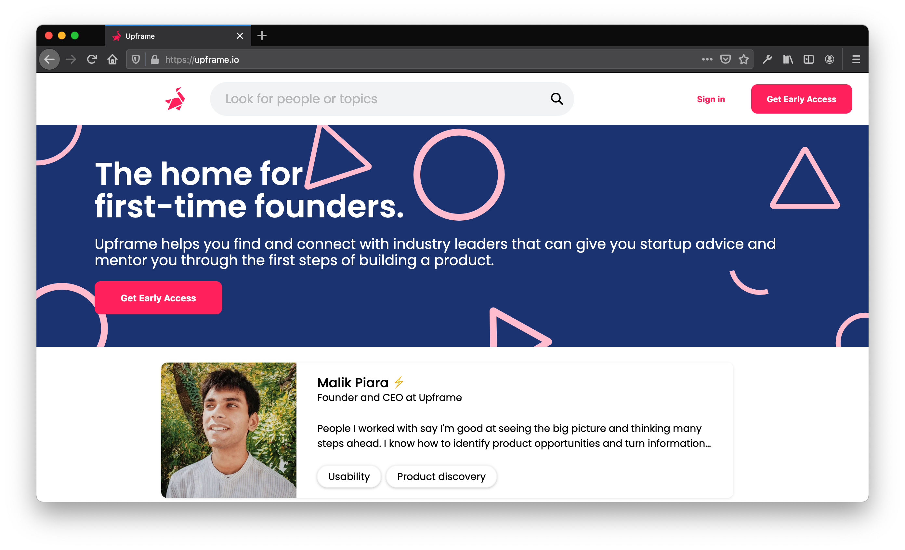
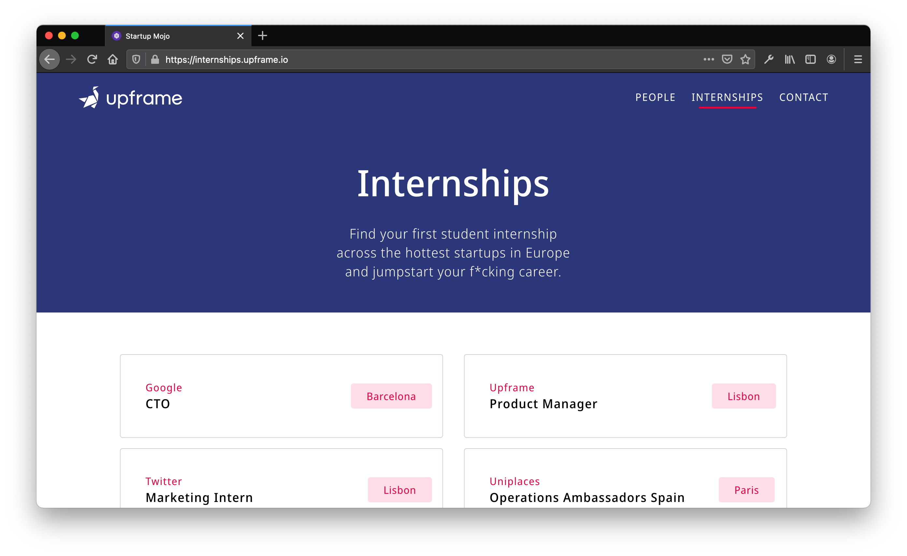

Projects
Connect
The home for first-time founders. I was part of the founding team and involved in the first iterations of the platform. Me and my two good friends Malik and Fábio created the platform as a way to improve the existing portuguese startup ecosystem. Nowadays Malik continues to work on this project with his new team in Berlin where the goal is worldwide use.
Internships
A platform to list internships avaliable in tech companies